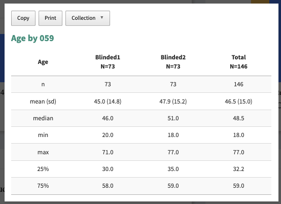
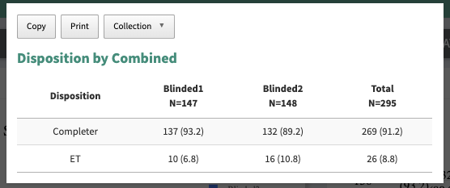
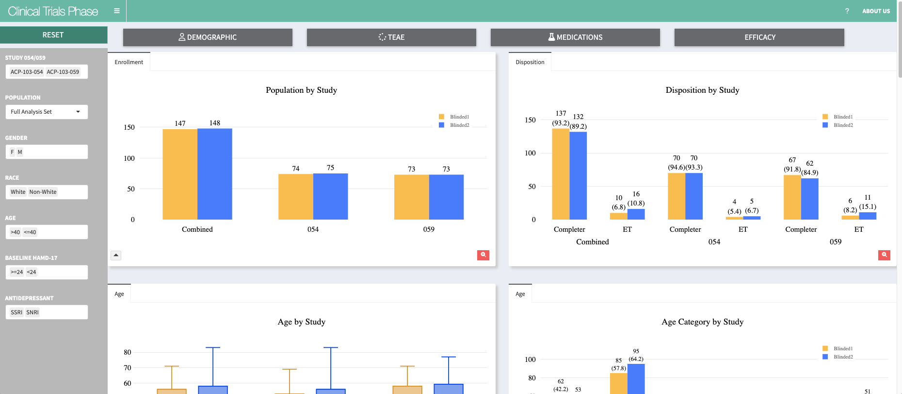

# read all data in data folder
paths <- list.files("data")
dataset <- purrr::map(
paths,
~read.csv(glue::glue("data/{.x}"))
)
names(dataset) <- gsub(".csv","", paths)
list2env(dataset, envir = globalenv())
#======================================
# Precossing data
adsl$study <- factor(ifelse(adsl$STUDYID == "STUDY-1", "National Study", "Non-National Study"), levels = c("National Study","Non-National Study"))I would like you read more about writing function from this book
R for Data Science https://r4ds.had.co.nz/functions.html
Table for continuous variables

Output of Continuous Variable (1st Column)
Group Variable (2nd and 3rd Column)
Total Column (Sum of 2nd and 3rd Column)
We need to show n, mean (sd), min, max, 25%, 75%
calc_numeric_statistics <- function(df, var, group) {
var = ensym(var)
group = ensym(group)
df %>%
group_by(!!group) %>%
dplyr::summarise(
n = dplyr::n(),
mean = mean(!!var, na.rm = TRUE),
sd = sd(!!var, na.rm = TRUE),
min = min(!!var, na.rm = TRUE),
max = max(!!var, na.rm = TRUE),
median = median(!!var, na.rm = TRUE),
p25 = quantile(!!var, 0.25, na.rm = TRUE),
p75 = quantile(!!var, 0.75, na.rm = TRUE))
}
calc_numeric_statistics(adsl, CGISGR1N, ARM)Table for categorical variables
Levels of Categorical Variable (1st Column)
Group Variable (2nd and 3rd Column)
Total Column (Sum of 2nd and 3rd Column)
We need to show the n (%) by each level

get_bar_dt <- function(df,var, ...){
vars <- ensym(var)
groups <- ensyms(...)
dt <- df %>% count(!!!groups, !!vars) %>% group_by(!!!groups) %>% mutate(per = (n/ sum(n))*100)
return(dt)
}
gender_dt <- get_bar_dt(adsl, SEX, study, ARM)
gender_dt <- get_bar_dt(adsl, "SEX", "study", "ARM")
dt <- gender_dt
dt$text <- paste0(dt$n, "\n(", sprintf('%.1f', dt$per), ")")
dt$text1 <- paste0(dt$n, " (", sprintf('%.1f', dt$per), "%)")
dt$key <- paste0(dt$study, "_", dt$SEX)
dt$key <- factor(dt$key, levels = c("National Study_F", "National Study_M" ,"Non-National Study_F" ,"Non-National Study_M"))
dt$hovertext <- paste(dt$study,"<br>", dt$ARM,"<br>", dt$SEX,"<br>", dt$text1)bar_plot <- function(dt, x_var, y_var, color_var, title = "", ticktext,tickvals ){
dt %>% plot_ly( x = ~ get(x_var),
color = ~ get(color_var),
y = ~get(y_var),
legendgroup=~get(x_var),
text= ~text,
# customdata = ~study,
# source = "gender_out",
hoverinfo = "text",
hovertext = ~ hovertext,
textposition = 'outside',
textfont = list(size =11, color= "black"),
colors = c("#ffc04c", "#4c8bff"), #c("#80cdc1", "#01665e"),
opacity = 1,
height = 400) %>%
layout(
bargap = 0.4,
annotations = list(
list(
text = "National Study",
font = list(color = 'black',
family = 'sans serif',
size = 18),
xref = "paper",
yref = "paper",
yanchor = "bottom",
xanchor = "center",
align = "center",
x = 0.25,
y = -0.25,
showarrow = FALSE)
,list(
text = "Non National Study",
font = list(color = 'black',
family = 'sans serif',
size = 18),
xref = "paper",
yref = "paper",
yanchor = "bottom",
xanchor = "center",
align = "center",
x = 0.75,
y = -0.25,
showarrow = FALSE)
),boxmode = "group",
font = list(color = 'gray',family = 'sans serif',size = 12),
hoverlabel = list(font=list(size=13)),
title = list(text = title,
font = list(
family = 'sans serif',
size = 20,
color = "black")),
margin =list( l=10,r=10,b=70,t=80,pad=10),
xaxis = list(
tickfont = list(
family = 'sans serif',
size = 17,
color = "black"
),
titlefont = list(
family = 'sans serif',
size = 17,
color = "black"
),
title = "",
zeroline = FALSE,
ticktext = ticktext,
tickvals = tickvals,
tickmode = "array",
color = "black"
),
yaxis = list(
range = c(0, max(dt$n) + (max(dt$n)/3) ),
tickfont = list(
family = 'sans serif',
size = 17,
color = "black"),
titlefont = list(
family = 'sans serif',
size = 17,
color = "black"),
title = "",
zeroline = FALSE,
color = "black"),
legend = list(orientation = "v", # show entries horizontally
xanchor = "center", # use center of legend as anchor
y = 1,
x = 0.85))
}
bar_plot(dt, x_var = "key", y_var = "n", color_var = "ARM", title = "Gender Bar Plot", ticktext = list("F","M","F","M"),
tickvals = list("National Study_F", "National Study_M" ,"Non-National Study_F" ,"Non-National Study_M") )It’s a visualization dashboard in order to produce actionable insights.
